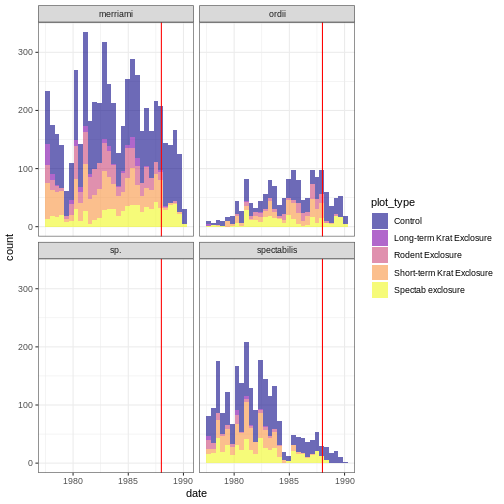
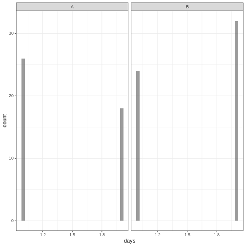
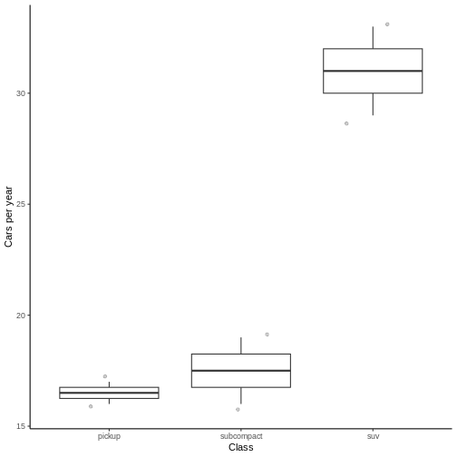
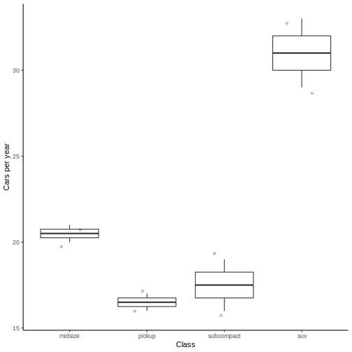

Minimal Reproducible Data
Last updated on 2024-10-22 | Edit this page
HELP We need to include but hide the data previously run so that we can continue to use it
OUTPUT
Attaching package: 'dplyr'OUTPUT
The following objects are masked from 'package:stats':
filter, lagOUTPUT
The following objects are masked from 'package:base':
intersect, setdiff, setequal, unionOverview
Questions
- What is a minimal reproducible dataset and why do I need it?
- What do I need to include in a minimal reproducible dataset?
- How do I create a minimal reproducible dataset?
- How do I make my own dataset reproducible?
Objectives
After completing this episode, participants should be able to…
- Describe a minimal reproducible dataset
- List the requirements for a minimal reproducible dataset
- Identify the important aspects of the dataset that are necessary to reproduce your coding problem
- Create a dataset from scratch to reproduce a given piece of code
- Subset an existing dataset to reproduce a given piece of code
- Share your own dataset in a way that is accessible and reproducible
4.1 What is a minimal reproducible dataset and why do I need it?
Now that we understand some basic errors and how to fix them, let’s look at what to do when we can’t figure out a solution to our coding problem. This is when you really need to know how to create a minimal reproducible example (MRE) as we talked about in episode 1. In general, an MRE will need: - A minimal dataset that can reproduce the error (or access to a such a dataset) - Minimal runnable code that can reproduce the error using the minimal dataset - Basic information about the system, R version, and packages being used - In case of random functions, a seed that will produce the same results each time (e.g., use set.seed())
The first step in creating an MRE is to set up some data for your helper to be able to reproduce your error and play around with the code in order to fix it.
Why? Remember our IT problem? It would be a lot easier for the IT support person to fix your computer if they could actually touch it, see the screen, and click around.
Another example: you’re knitting a sweater and one of the sleeves looks wonky. You call a friend and ask why it’s messed up. They can’t possibly help without being able to hold the sweater and look at the stitches themselves.
It would be great if we were able to give the helper the entire dataset, but usually, we can’t.
Callout
There are several reasons why you might need to create a separate dataset that is minimal and reproducible instead of trying to use your actual dataset. The original dataset may be:
- too large: the Portal dataset is ~35,000 rows with 13 columns and contains data for decades. That’s a lot!
- private - your dataset might not be published yet, or maybe you’re studying an endangered species whose locations can’t easily be shared. Another example: many medical datasets cannot be shared publically.
- hard to send - on most online forums, you can’t attach supplemental files (more on this later). Even if you are just sending data to a colleague, file paths can get complicated, the data might be too large to attach, etc.
- complicated - it would be hard to locate the relevant information.
One example to steer away from are needing a ‘data dictionary’ to
understand all the meanings of the columns (e.g. what is “plot type” in
ratdat?) We don’t our helper to waste valuable time to figure out what everything means. - highly derived/modified from the original file. As an example, you may have already done a bunch of preliminary data wrangling and you don’t want to include all that code when you send the example (see later: the minimal code section), so you need to provide the intermediate dataset directly to your helper.
It’s useful to strip the dataset to its essential parts to identify where exactly the problem is. A minimal dataset is a dataset that includes the information necessary to run the code, but removes all other unnecessary parts (extra columns/rows, extra context, etc.)
We need minimal reproducible datasets to make it easy/simple/fast for the helper to focus in on the problem at hand and “get their hands dirty” tinkering with the dataset.
4.2 What do I need to include in a minimal reproducible dataset?
What needs to be included in a reproducible dataset?
Ask the audience, wait for them to respond
It’s actually all in the name:
- it needs to be minimal, which means it only contains the necessary information to run the piece of code with which you are struggling.
- it needs to be reproducible. The data you provide must consistently reproduce the output or error with which you are struggling.
- Can alternatively think of this as “relevant” to the problem. Maybe a silly example but–if you’re struggling with the behavior of a column that’s a factor, it wouldn’t be useful to make a dataset that contains only numeric data, no matter how simple and elegant that dataset might appear to be.
- It needs to be complete and accessible.
Remember, your helper may not be in the room with you or have access to your computer, therefore the data must be able to stand on its own, it must be complete and free of dependencies. Alternatively, you must ensure your helper has access to the dataset you provide. More on this later.
Callout
Remember that helpers do not have access to files on your computer!
You might be used to always reading data in as separate files, but helpers can’t access those files. Even if you sent someone a file, they would need to put it in the right directory, make sure to load it in exactly the same way, make sure their computer can open it, etc. Since the goal is to make everyone’s lives as easy as possible, we need to think about our data in a different way–as a dummy object created in the script itself.
Callout
It can be helpful to simply look at the ?h elp section. Scroll down to where they have examples. These will usually be minimal and reproducible.
For example, let’s look at the function mean:
R
?mean
We see examples that can be run directly on the console, with no additional code.
R
x <- c(0:10, 50)
xm <- mean(x)
c(xm, mean(x, trim = 0.10))
OUTPUT
[1] 8.75 5.50Exercise 1
These datasets are not well suited for use in a reprex. For each one, try to reproduce the dataset on your own in R. Does it work? What happened? Explain.
- (A screenshot of our dataset – need to upload images to repo)
sample_data <- read_csv(“/Users/kaija/Desktop/RProjects/ResearchProject/data/sample_dataset.csv”)dput(complete_old[1:100,])sample_data <- data.frame(species = species_vector, weight = c(10, 25, 14, 26, 30, 17))
- Not reproducible because it is a screenshot.
- Not reproducible because it is a path to a file that only exists on someone else’s computer and therefore you do not have access to it using that path.
- Not minimal, it has far too many columns and probably too many rows. It is also not reproducible because we were not given the source for “complete_old.”
- Not reproducible because we are not given the source for “species_vector.”
Exercise 1 (continued)
For an extra challenge, can you edit the above datasets to make them minimal and reproducible?
Exercise 2
Here is a piece of code that is throwing me a simple error (it is returning NA):
R
mean(rodents$weight)
OUTPUT
[1] NAWhich of the following represents a minimal reproducible dataset for this code? Can you describe why the other ones are not?
sample_data <- data.frame(month = rep(7:9, each = 2), hindfoot_length = c(10, 25, 14, 26, 30, 17))sample_data <- data.frame(weight = rnorm(10))sample_data <- data.frame(weight = c(100, NA, 30, 60, 40, NA))sample_data <- sample(rodents$weight, 10)sample_data <- rodents_modified[1:20,]
The correct answer is C!
- does not include the variable of interest (weight).
- does not produce the same problem (NA result with a warning message)–the code runs just fine.
- is not reproducible. Sample randomly samples 10 items; sometimes it may include NAs, sometime it may not (not guaranteed to reproduce the error). It can be used if a seed is set (see next section for more info).
- uses a dataset that isn’t accessible without previous data wrangling code–the object rodents_modified doesn’t exist.
4.3 How do I create a minimal reproducible dataset?
This is where I often get stuck: how do I recreate the key elements on my dataset in order to reproduce my error?? That seems really hard! If you are like me and find this initially overwhelming, don’t worry. We will break it down into smaller steps. First, there are two approaches to providing a dataset. You can create one from scratch or you can use an already available dataset.
We then need to know which elements of your dataset are necessary. - How many variables? - What data type is each variable? - How many levels or observations are necessary? - How many of the values need to be the same/different?
4.3.1 Create a dummy dataset from scratch
You can create vectors using
R
vector <- c(1,2,3,4)
You can add some randomness by sampling from a vector using sample()
For example you can sample numbers 1 through 10 in a random order
R
x <- sample(1:10)
Or you can use a random normal distribution
R
x <- rnorm(10)
You can also use letters to create factors.
R
x <- sample(letters[1:4], 20, replace=T)
You can create a dataframe using data.frame (or
tibble in the dplyr package).
R
data <- data.frame (x = sample(letters[1:3], 20, replace=T),
y = rnorm(1:20))
Make sure you name your variables and keep it simple.
Callout
For more handy functions for creating data frames and variables, see
the cheatsheet. For some questions, specific formats can be needed. For
these, one can use any of the provided as.someType functions:
as.factor, as.integer,
as.numeric, as.character,
as.Date, as.xts.
Let’s come back to our kangaroo rats example. Since we will be working with the same dataset this year, we want to know how many kangaroo rats of each species were found in each plot type in past years so that we can better estimate what sample size we can expect.
Here is the code we use:
R
krats %>%
ggplot(aes(x = date, fill = plot_type)) +
geom_histogram(alpha=0.6)+
facet_wrap(~species)+
theme_bw()+
scale_fill_viridis_d(option = "plasma")+
geom_vline(aes(xintercept = lubridate::ymd("1988-01-01")), col = "red")
OUTPUT
`stat_bin()` using `bins = 30`. Pick better value with `binwidth`.
Now let’s say we saw this and decided we wanted to get rid of “sp.” but didn’t know how. We want to ask someone online but we first need to create a minimal reproducible example.
What variables would we need to reproduce this figure?
A variable for species, how many? 4. Let’s call them A, B, C, and D.
R
species <- c('A','B','C','D')
We then need a variable for plot type, we have 5 but we could cut it down to 2; let’s call them P1 and P2. In reality, we probably don’t even need this for this question, but for the sake of practicing let’s add it in.
R
plot.type <- c('P1','P2')
Lastly we need a variable for date. The specifics don’t matter here, so let’s just call it days and make it 1-10.
R
days <- c(1:10)
Great! Now we have all of our variables, let’s go sampling–we can
simulate the data collected each day by using sample().
We need to sample each plot for 10 days and presumably find a certain
number of each species in each plot. Let’s pretend we find a total of
100 species, this mean we need to sample the vector species
100 times. Since we want species to repeat, we will also set replace to
T. We then need to sample the plots for the same number of times, so
that each species sample is associated with either P1 or P2. Lastly, we
want to add each day we sampled.
R
sample_data <- data.frame(
Species = sample(species, 100, replace=T),
Plot = sample(plot.type, 100, replace=T),
Day = days
)
head(sample_data)
OUTPUT
Species Plot Day
1 A P1 1
2 C P1 2
3 D P1 3
4 D P1 4
5 D P2 5
6 A P2 6Great! Now we have a sample data set that is minimal, but is is reproducible?
Give them time to think about it and answer the question.
It isn’t! Why?
Remember: sample() creates a random dataset! This will not be
consistently reproducible. In order to make this example fully
reproducible we should first set.seed().
R
set.seed(1)
sample_data <- data.frame(
Species = sample(species, 100, replace=T),
Plot = sample(plot.type, 100, replace=T),
Day = days
)
head(sample_data)
OUTPUT
Species Plot Day
1 A P2 1
2 D P2 2
3 C P2 3
4 A P1 4
5 B P1 5
6 A P1 6Now we have our minimal reproducible example! But are we sure it reproduces what we are trying to reproduce? Let’s test it out.
R
sample_data %>%
ggplot(aes(x = Day, fill = Plot)) +
geom_histogram(alpha=0.6)+
facet_wrap(~Species)+
theme_bw()+
scale_fill_viridis_d(option = "plasma")
OUTPUT
`stat_bin()` using `bins = 30`. Pick better value with `binwidth`.
Yes! It is certainly simplified, but it has the elements we want it to have. And now we can ask how to get rid of “C”. Given that this was a very simple question, we could have simplified this example even further; we could have used 2 species and even just 2 days, in which case a simple solution could be
R
sample_data2 <- data.frame(
species = sample(c('A','B'), 100, replace = T),
days = 1:2
)
sample_data2 %>%
ggplot(aes(x=days)) +
geom_histogram(alpha=0.6)+
facet_wrap(~species)+
theme_bw()
OUTPUT
`stat_bin()` using `bins = 30`. Pick better value with `binwidth`.
which is even more simplistic than the one before but still contains the elemnts we are interested–we have a set of “species” separated into facets and we want to get rid of one of them. In reality, had we realized that we needed to get rid of the rows with “sp.” in them, we could have ignored the figure entirely and posed the question about the data alone. E.g., “how do I remove rows that contain a specific name?” Then give just the example dataset we created.Exercise 3 (10 minutes)
Now practice doing it yourself. Create a data frame with:
A. One categorical variable with 5 levels. One continuous variable. B. One continuous variable normally distributed C. First name, last name, sex, age, and treatment type.
4.3.2 Create a dataset using an existing dataset
If you don’t want to create a dataset from scratch, maybe because you
have too many variables or it’s a more complicated structure and you are
not sure where the error is, you can subset from an existing dataset.
Useful functions for subsetting a dataset include subset(),
head(), tail(), indexing with [] (e.g.,
iris[1:4,]). Alternatively, you can use tidyverse functions like
select(), and filter(). You can also use the
same sample() functions we covered earlier.
A list of readily available datasets can be found using
library(help="datasets"). You can then use ?
in front of the dataset name to get more information about what the
contents of the dataset.
When working with a built-in dataset you still have to edit your code to fit the new data, but it is probably faster than building a large dataset from scratch, and it gets easier with practice!
Let’s keep using our previous example, how can we reproduce that
figure using the existing dataset mpg. First, let’s
interrogate this dataset to see what we are working with.
R
?mpg
Which variable from mpg do you think we could use to replace our variables? Remember: we need one for species, one for plot type, and one for date.
There are certainly multiple options! Let’s go with model for species, manufacturer for plot type, and year for date.
R
data <- mpg %>% select(model, manufacturer, year)
dim(data)
OUTPUT
[1] 234 3R
glimpse(data)
OUTPUT
Rows: 234
Columns: 3
$ model <chr> "a4", "a4", "a4", "a4", "a4", "a4", "a4", "a4 quattro", "…
$ manufacturer <chr> "audi", "audi", "audi", "audi", "audi", "audi", "audi", "…
$ year <int> 1999, 1999, 2008, 2008, 1999, 1999, 2008, 1999, 1999, 200…We only need 4 species, and 5 plots. How many do we have here?
R
length(unique(data$model))
OUTPUT
[1] 38R
length(unique(data$manufacturer))
OUTPUT
[1] 15Certainly more than we need. Then let’s simplify.
R
set.seed(1)
data <- data %>%
filter(model %in% sample(model, 4, replace = F))
Cool, now we have just 4 models. BUT we also only have 2 years… so maybe year wasn’t the best choice afterall, let’s change it to hwy
R
data <- mpg %>% select(model, manufacturer, hwy) %>%
filter(model %in% sample(model, 4, replace = F))
Now we can try out plot
R
data %>%
ggplot(aes(x = hwy, fill = manufacturer)) +
geom_histogram(alpha=0.6)+
facet_wrap(~model)+
theme_bw()+
scale_fill_viridis_d(option = "plasma")
OUTPUT
`stat_bin()` using `bins = 30`. Pick better value with `binwidth`.
Do you think that works?
It turns out that maybe manufacturer was not the best representation for plot, since we do need each car model to appear in each “plot”. What would all cars have?
Let’s change model to manufacturer, and let’s add class.
R
set.seed(1)
data2 <- mpg %>% select(manufacturer, class, hwy) %>%
filter(manufacturer %in% sample(manufacturer, 4, replace = F))
data2 %>%
ggplot(aes(x = hwy, fill = class)) +
geom_histogram(alpha=0.6)+
facet_wrap(~manufacturer)+
theme_bw()+
scale_fill_viridis_d(option = "plasma")
OUTPUT
`stat_bin()` using `bins = 30`. Pick better value with `binwidth`. That’s more like it! You can keep playing around with it or you can give
it more thought apriori, but either way you get the idea. While what we
get is not an exact replica, it’s an analogy. The important thing is
that we created a figure whose basic elements/structure or “key
features” remain intact–namely, the number and type of variables and
categories.
That’s more like it! You can keep playing around with it or you can give
it more thought apriori, but either way you get the idea. While what we
get is not an exact replica, it’s an analogy. The important thing is
that we created a figure whose basic elements/structure or “key
features” remain intact–namely, the number and type of variables and
categories.
Now it is your turn!
Challenge
For each of the following, identify which data are necessary to
create a minimal reproducible dataset using mpg. A) We want
to know how the highway mpg has changed over the years
B) We need a list of all “types” of cars and their fuel type for each
manufacturer
C) We want to compare the average city mpg for a compact car from each
manufacturer
OR change the above challenge to be about ratdat
OR move to…
Now that we know how many of each species were captured over the years, we want to know how many of each species you might expect to catch per day.
Let’s practice how we would do this with our data.
Let the students try it out and discuss outloud
We end up with the following code:
R
krats_per_day <- krats %>%
group_by(date, year, species) %>%
summarize(n = n()) %>%
group_by(species)
OUTPUT
`summarise()` has grouped output by 'date', 'year'. You can override using the
`.groups` argument.R
krats_per_day %>%
ggplot(aes(x = species, y = n))+
geom_boxplot(outlier.shape = NA)+
geom_jitter(width = 0.2, alpha = 0.2)+
theme_classic()+
ylab("Number per day")+
xlab("Species")

Challenge
How might you reproduce this using the mpg dataset?
Substitute krats with cars, species with class, date with year. The question becomes, how many cars of each class are produced per year?
R
set.seed(1)
cars_per_y <- mpg %>%
filter(class %in% sample(class, 4, replace=F)) %>%
group_by(class, year) %>%
summarize(n=n()) %>%
group_by(class)
OUTPUT
`summarise()` has grouped output by 'class'. You can override using the
`.groups` argument.R
cars_per_y %>%
ggplot(aes(x = class, y = n))+
geom_boxplot(outlier.shape = NA)+
geom_jitter(width = 0.2, alpha=0.2)+
theme_classic()+
ylab("Cars per year")+
xlab("Class")

R
# this is only giving us 3 classes even though we asked for 4, why?
# Because it is sampling from the column "class" which has many of the same class.
# Therefore, we need to specify that we want to sample from within the unique values in "class".
cars_per_y <- mpg %>%
filter(class %in% sample(unique(mpg$class), 4, replace=F)) %>%
group_by(class, year) %>%
summarize(n=n()) %>%
group_by(class)
OUTPUT
`summarise()` has grouped output by 'class'. You can override using the
`.groups` argument.R
cars_per_y %>%
ggplot(aes(x = class, y = n))+
geom_boxplot(outlier.shape = NA)+
geom_jitter(width = 0.2, alpha=0.2)+
theme_classic()+
ylab("Cars per year")+
xlab("Class")

Using your own data by creating a minimal subset
Perhaps you are now thinking that if you can use a subset of an
existing dataset, wouldn’t it be easier to just subset my own data to
make it minimal? You are not wrong. There are cases when you can subset
your own data in the same way you would subset an existing dataset to
make a minimal dataset, the key is to then make it reproducible. That’s
when we use the function dput, which essentially takes your
dataframe and give you code to reproduce it!
For example, using our previous data2
R
dput(cars_per_y)
OUTPUT
structure(list(class = c("midsize", "midsize", "pickup", "pickup",
"subcompact", "subcompact", "suv", "suv"), year = c(1999L, 2008L,
1999L, 2008L, 1999L, 2008L, 1999L, 2008L), n = c(20L, 21L, 16L,
17L, 19L, 16L, 29L, 33L)), class = c("grouped_df", "tbl_df",
"tbl", "data.frame"), row.names = c(NA, -8L), groups = structure(list(
class = c("midsize", "pickup", "subcompact", "suv"), .rows = structure(list(
1:2, 3:4, 5:6, 7:8), ptype = integer(0), class = c("vctrs_list_of",
"vctrs_vctr", "list"))), class = c("tbl_df", "tbl", "data.frame"
), row.names = c(NA, -4L), .drop = TRUE))As you can see, even with our minimal dataset, it is still quite a chunk of code. What if you tried putting in krats_per_day? It is clear that either way you will still need to considerably minimize your data. Even then, it will often be simpler to provide an existing dataset or provide one from scratch. Furthermore, often we are able to discover the source of our error or solve our own problem when we have to go through the process of breaking it down into its essential components!
Nevertheless, it remains an option for when your data appears too complex or you are not quite sure where your error lies and therefore are not sure what minimal components are needed to reproduce the example.
Callout
What about NAs? If your data has NAs and they may be causing
the problem, it is important to include them in your MR dataset. You can
find where there are NAs in your dataset by using is.na,
for example: is.na(krats$weight). This will return a
logical vector or TRUE if the cell contains an NA and FALSE if not. The
simplest way to include NAs in your dummy dataset is to directly include
it in vectors: x <- c(1,2,3,NA). You can also subset a
dataset that already contains NAs, or change some of the values to NAs
using mutate(ifelse()) or substitute all the values in a
column by sampling from within a vector that contains NAs.
One important thing to note when subsetting a dataset with NAs is that subsetting methods that use a condition to match rows won’t necessarily match NA values in the way you expect. For example
R
test <- data.frame(x = c(NA, NA, 3, 1), y = rnorm(4))
test %>% filter(x != 3)
OUTPUT
x y
1 1 0.7635935R
# you might expect that the NA values would be included, since “NA is not equal to 3”. But actually, the expression NA != 3 evaluates to NA, not TRUE. So the NA rows will be dropped!
# Instead you should use is.na() to match NAs
test %>% filter(x != 3 | is.na(x))
OUTPUT
x y
1 NA -0.294720447
2 NA -0.005767173
3 1 0.763593461Here are some more practice exercises if you wish to test your knowledge
(I copied these from excercise 6 in the google doc… but I’m not sure that they are getting at the point of the lesson…) ::: challenge Excercise:** Each of the following examples needs your help to create a dataset that will correctly reproduce the given result and/or warning message when the code is run. Fix the dataset shown or fill in the blanks so it reproduces the problem. A) set.seed(1) sample_data <- data.frame(fruit = rep(c(“apple”, “banana”), 6), weight = rnorm(12)) ggplot(sample_data, aes(x = fruit, y = weight)) + geom_boxplot() HELP: how do I insert an image from clipboard?? Is it even possible?
bodyweight <- c(12, 13, 14, , ) max(bodyweight) [1] NA
sample_data <- data.frame(x = 1:3, y = 4:6) mean(sample_data\(x) [1] NA Warning message: In mean.default(sample_data\)x): argument is not numeric or logical: returning NA
sample_data <- ____ dim(sample_data) NULL :::
- “fruit” needs to be a factor and the order of the levels must be
specified:
sample_data <- data.frame(fruit = factor(rep(c("apple", "banana"), 6), levels = c("banana", "apple")), weight = rnorm(12)) - one of the blanks must be an NA
- ?? + what’s really the point of this one?
sample_data <- data.frame(x = factor(1:3), y = 4:6)
Key Points
- A minimal reproducible dataset contains (a) the minimum number of lines, variables, and categories, in the correct format, to reproduce a certain problem; and (b) it must be fully reproducible, meaning that someone else can reproduce the same problem using only the information provided.
- You can create a dataset from scratch using
as.data.frame, you can use available datasets likeirisor you can use a subset of your own dataset - You can share your data by…